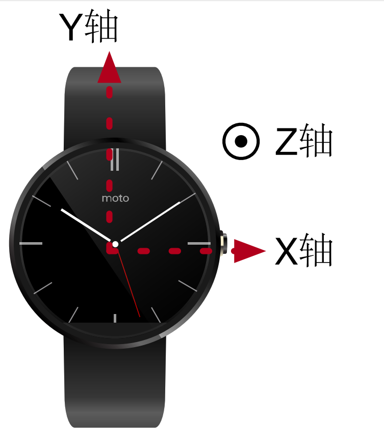
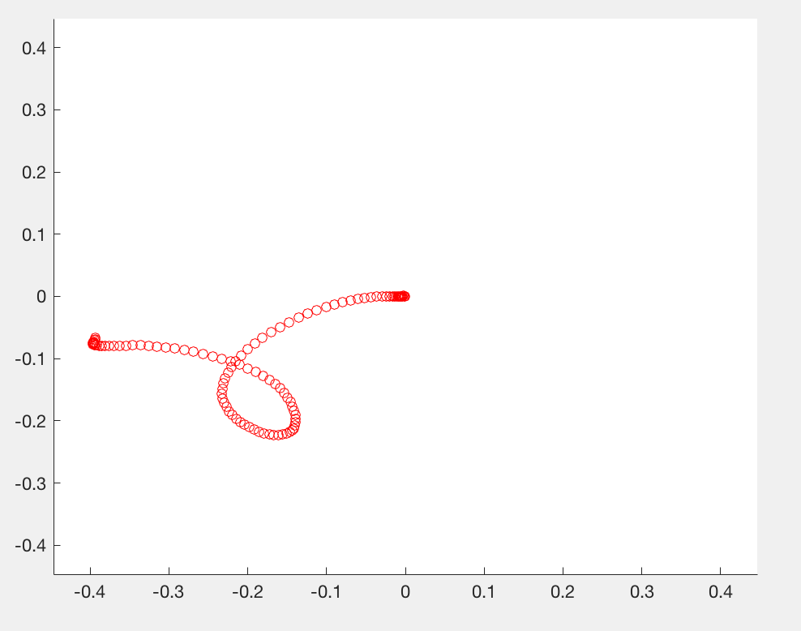

8.3.3 数据处理与展示
数据处理与展示¶
当使用智能手表并根据《智能手表数据采集》教程采集到惯性传感器数据后，使用**matlab**处理并展示数据
文件结构¶
代码文件夹包含main.m和move.data两个文件，其中main.m为处理手表数据的**matlab**源文件，move.data为从智能手表上采集到的惯性传感器数据文件
代码说明¶
首先使用load函数将move.data的内容提取为一个矩阵：
1 | A = load('move.data'); |
矩阵A共有114行，7列，通过文本编辑器打开move.data或者通过**matlab**的变量查询界面可以看到矩阵内容，每行代表一个时刻采集到的数据，列的含义见下表（选取move.data前2行作为示例）：

上表中，时间戳的具体含义为：从1970年1月1日00:00到当前系统时间（智能手表上的系统时间）经历的总毫秒数。手表的三个坐标轴示意图如下：

为了便于处理，把时间戳的开始时间固定为0，以后的时间戳是相对于第一条数据的时间偏移：
1 | A(:, 1) = A(:, 1) - A(1, 1); |
本程序中使用的智能手表其加速度计和陀螺仪的采样率是50Hz，可以通过查询手表的相关文档或者观察相邻数据时间戳间隔来获取，定义变量如下：
1 2 | samplingRate = 50; samplingTime = 1000 / samplingRate; |
从上表以及数据文件中都可以看出，有的数据时间戳是相同的，而相邻两条数据的时间戳间隔也不是定值，其中的原因需要从智能手表的惯性测量单元采集数据的原理说起。
在Android应用开发中，采集加速度计或者陀螺仪的数据是通过监听“数据变化”这一事件来实现的。以加速度计为例，如果加速度计元件在此刻测量到的数据与上一次测量到的数据不同，则会触发“数据变化”这一事件，可以利用该事件携带的参数在程序中进行数据收集或处理。加速度计元件相邻两次测量之间的时间间隔由该元件的采样率决定，两者互为倒数。理论上来说，如果相邻两次测量测得的数据相同，则不会触发“数据变化”事件，导致某一时刻数据缺失，但是由于元件本身的噪声，两次测量数据相同的情况很少见。由于程序运行的时延、元件采样率本身不精确等因素带来的误差，相邻两次数据的时间戳间隔不一定恰好等于元件相邻两次测量之间的时间间隔。两条数据时间戳相同的情况则是由于加速度计和陀螺仪是两个不同的元件，在采集时可能在同一时刻触发了加速度计的“数据变化”事件和陀螺仪的“数据变化”事件，因此在同一时刻会将数据记录2次。
既然时间戳间隔不均匀，为了将时间戳处理成均匀的以便根据加速度计算速度和位移，需要对数据进行平滑插值处理：
1 2 3 4 5 6 7 8 | [~, I] = unique(A(:, 1), 'first'); A = A(I, :); temA = []; temA(:, 1) = (A(1, 1) : samplingTime : A(end, 1))'; for i = 2 : size(A, 2) temA(:, i) = spline(A(:, 1), A(:, i), temA(:, 1)); end |
unique函数取出一个向量中所有互不相同的值，即去重，spline函数为三次样条插值函数，调用方式为spline(x,y,xx)，即先通过参数x和y拟合一条三次曲线，然后将自变量取值xx对应的函数值返回。
本程序仅展示2维情况下的数据，move.data文件也是手表在表盘所在平面内运动得到的数据，因此在本程序中，Z轴的加速度和3轴陀螺仪没有意义，只需要X轴和Y轴的加速度：
1 2 | T = temA(:, 1); A = temA(:, 2 : 3); |
有了时间戳均匀的加速度数据，可以据此计算速度和位移了。在这里，采用的运动模型为**分段匀加速运动**，即认为在此次采样和下次采样之间的这段时间，手表保持此次采样值对应的加速度不变，根据此运动模型计算得到不同时刻对应的速度和位移：
1 2 3 4 5 | dt = samplingTime / 1000; dV = A * dt; V = cumsum(dV); dD = V * dt + A * dt ^ 2 / 2; D = cumsum(dD); |
cumsum对一个向量（或矩阵，默认按照第一个维度的方向）进行累加操作，返回所有累加的中间结果拼成的向量（或矩阵）
下面可以根据时间戳和2个轴的加速度、速度和位移数据画图展示，第一个图展示的是2个轴、3个物理量对应的6张图的曲线，使用subplot函数可以将这6张图画到一起：
1 2 3 4 5 6 7 8 9 10 11 12 13 14 15 16 17 18 19 20 21 22 23 | subplot(3, 2, 1); plot(T, A(:, 1)); title('X轴加速度'); subplot(3, 2, 2); plot(T, A(:, 2)); title('Y轴加速度'); subplot(3, 2, 3); plot(T, V(:, 1)); title('X轴速度'); subplot(3, 2, 4); plot(T, V(:, 2)); title('Y轴速度'); subplot(3, 2, 5); plot(T, D(:, 1)); title('X轴位移'); subplot(3, 2, 6); plot(T, D(:, 2)); title('Y轴位移'); |
结果如下图所示：

为了展示手表运动的动态效果，可以利用pause函数进行连续画点以实现动画效果：
1 2 3 4 5 6 7 8 9 | w = max(max(abs(D))) + 0.05; figure(2); axis([-w, w, -w, w]); for i = 1 : size(D, 1) hold on; plot(D(i, 1), D(i, 2), 'ro'); pause(dt); end |
axis函数规定了图像X和Y轴的取值范围，手表的运动轨迹如下：

思考与扩展¶
- 本程序只展示了在2维平面内手表运动的情况，如何将该场景拓展至3维？此时需要陀螺仪的数据计算手表的旋转情况。注意：手表测量得到的加速度数据，其参照系为手表的加速度计元件，而需要恢复的手表运动轨迹其参照系为世界坐标系，两者需要转换。
- 2维平面的另一个简化之处在于不需要考虑重力的影响（重力全部分布在Z轴，在本程序中不予考虑），如果扩展到3维，如何在手表运动的情况下去除重力？注意：由于手表坐标系相对于世界坐标系的变化，重力在手表参照系下不再是常量。
- 在上面惯性测量单元采集数据的原理中提到，加速度计和陀螺仪在采集数据时均有误差，这种误差对于恢复轨迹能带来多大的影响？如何有效地去除这种误差？
- 计算速度和位移时，本程序采用的**分段匀加速运动**模型是否合理？有没有更能拟合真实速度和位移的运动模型？
- 本程序进行手表手势识别的思路是先恢复轨迹，再根据轨迹判断手势。在轨迹恢复不准的情况下，如何根据不准的结果进行不同手势的区分？